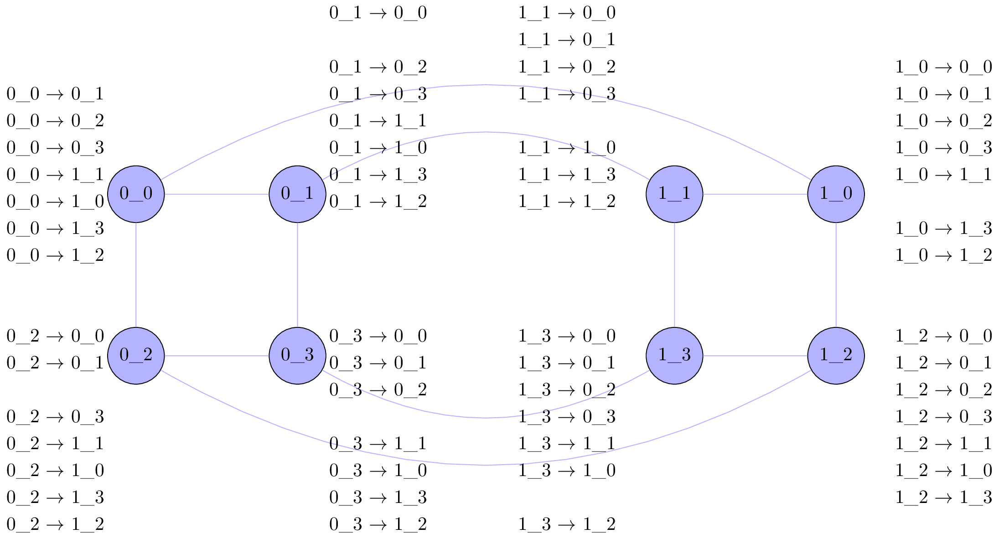

\documentclass[varwidth=true,varwidth=\maxdimen]{standalone}
\usepackage{lmodern}
% (2) specify encoding
\usepackage[T1]{fontenc}
% (3) load symbol definitions
\usepackage{textcomp}
\usepackage{tikz}
\usepackage{ifthen}
\usetikzlibrary{arrows,positioning}
% Load tikz library in file "tikzlibraryBES.code.tex"
\tikzset{
% House
hcnode/.style={circle,draw,fill=blue!30, minimum size=30},
hclink/.style={text=blue!30,fill=blue!30},
hclabel/.style={text width= 2cm, align=center},
% hypercube label pics
pics/hclabels/.style args={#1/#2/#3}{
code={
% for convience using 0 to 7
% \node[hclabel] (h10) at (0,0)
\foreach \c [count=\x from 0] in {{0\textunderscore0},{0\textunderscore1},{0\textunderscore2},{0\textunderscore3},{1\textunderscore1},{1\textunderscore0}, {1\textunderscore3},{1\textunderscore2}}
\ifthenelse{\x = #1}
{}
{
% loop through list of colored nodes
\foreach\n/\co in {#3}
\ifthenelse{\x = \n}
{\node[text=\co!60] at (0,-0.5*\x) {#2 $ \rightarrow $ \c};}
{\node at (0,-0.5*\x) {#2 $ \rightarrow $ \c};}
;
}
;
}},
pics/hclabels/.default=0/0\textunderscore0/35,
% hypercube
pics/hypercube/.style args={#1/#2/#3}{
code={
% Define house parameters
\newcommand\wallheight{#1} % 0.65
\newcommand\roofoverhang{#2} % 0.15
\newcommand\roofangle{#3} % 35
% Calculate some dependent sizes
\pgfmathsetmacro\lengthroof{0.5/cos(\roofangle)+\roofoverhang}
% draw profile of house
% \draw[line width=1pt] (-0.5,\wallheight) -- (-0.5,0) -- (0.5,0) -- (0.5,\wallheight) -- ++(-\roofangle:\roofoverhang) -- ++(180-\roofangle:\lengthroof) -- ++(180+\roofangle:\lengthroof) -- cycle;
\node[hcnode] at (0, 0) (00) {0\textunderscore0};
\node[hcnode] at (3, 0) (01) {0\textunderscore1};
\node[hcnode] at (0, -3) (02) {0\textunderscore2};
\node[hcnode] at (3, -3) (03) {0\textunderscore3};
\node[hcnode] at (10, 0) (11) {1\textunderscore1};
\node[hcnode] at (13, 0) (10) {1\textunderscore0};
\node[hcnode] at (10, -3) (13) {1\textunderscore3};
\node[hcnode] at (13, -3) (12) {1\textunderscore2};
% Arrows last
% Draw blue links
\path[draw,blue!30] (00) -- (01) -- (03) -- (02) -- (00);
\path[draw,blue!30] (11) -- (10) -- (12) -- (13) -- (11);
% inner links
\draw [-,blue!30] (01) to [out=30,in=150] (11);
\draw [-,blue!30] (03) to [out=-30,in=-150] (13);
% outer links
\draw [-,blue!30] (00) to [out=30,in=150] (10);
\draw [-,blue!30] (02) to [out=-30,in=-150] (12);
% Draw green links
% Draw Red links
}},
pics/hypercube/.default=0.65/0.15/35
}
\begin{document}
\begin{tikzpicture}
\path (+1.5,-0.85) pic[scale=1.0] {hypercube};
% Labels for Node 0
\path (0,1.5) pic[scale=1.0] {hclabels=0/0\textunderscore0/{0/black}};
% Labels for Node 2
\path (0,-3.5) pic[scale=1.0] {hclabels=2/0\textunderscore2/{2/black}};
% Labels for Node 1
\path (6,2.5) pic[scale=1.0] {hclabels=1/0\textunderscore1/{1/black}};
% Labels for Node 3
\path (6,-3.5) pic[scale=1.0] {hclabels=3/0\textunderscore3/{3/black}};
% Labels for Node 0
\path (16.5,1.5) pic[scale=1.0] {hclabels=5/1\textunderscore0/{5/black}};
% Labels for Node 2
\path (16.5,-3.5) pic[scale=1.0] {hclabels=7/1\textunderscore2/{7/black}};
% Labels for Node 1
\path (9.5,2.5) pic[scale=1.0] {hclabels=4/1\textunderscore1/{4/black}};
% Labels for Node 3
\path (9.5,-3.5) pic[scale=1.0] {hclabels=6/1\textunderscore3/{6/black}};
\end{tikzpicture}
%
% \newline
% \begin{tikzpicture}
% \path (0,0) pic[scale=1.0] {hclabels=0/0\textunderscore0/{1/red,4/green}};
% \path (+1.5,-0.85) pic[scale=1.0] {hypercube};
% \end{tikzpicture}
% \begin{tikzpicture}
% \path (+1.5,-0.85) pic[scale=1.0] {hypercube};
% \end{tikzpicture}
\end{document}